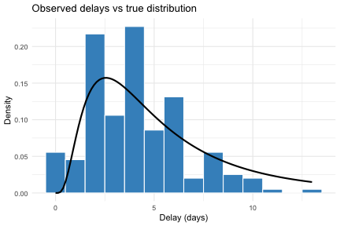
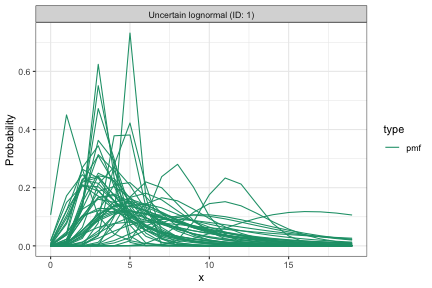
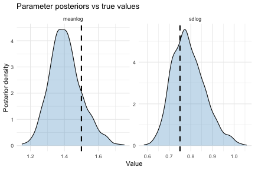
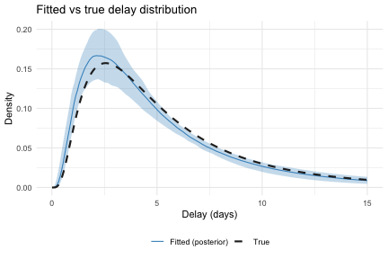

Fitting delay distributions with estimate_dist()
Source:vignettes/estimate-dist.Rmd
estimate-dist.RmdIntroduction
Epidemiological delay distributions are subject to double interval censoring: both the primary event (e.g. infection) and the secondary event (e.g. symptom onset) are observed within discrete time windows rather than at exact times[1,2]. If ignored, this censoring biases parameter estimates. Right truncation introduces further bias because recent observations are systematically missing due to reporting delays.
estimate_dist() fits delay distributions from linelist
data while accounting for both of these biases. Event times are
typically recorded at daily resolution, but the date-based interface
supports arbitrary censoring window widths. The function uses a Stan
model that vendors likelihood functions from the primarycensored
package. If you use estimate_dist(), please cite
primarycensored in addition to EpiNow2.
Common use cases include estimating the incubation period (infection to symptom onset), the reporting delay (symptom onset to case report), or the serial interval (symptom onset in infector-infectee pairs). Generation time estimation (infection to infection) typically requires known infection times for both infector and infectee, which generally calls for more complex models.
For more flexible delay distribution modelling, epidist supports
time-varying delays, partial pooling across delays, regression on
covariates, and a range of other models. primarycensored
operates at a lower level, working directly with numeric delays and
censoring windows. It supports fitting delay distributions both with and
without a Stan dependency and is also useful for creating double
interval censoring and truncation adjusted probability mass functions
for use in other models. primarycensored also supports
vendoring its Stan functions into custom models, which is useful for
adapting the delay estimation approach to support more complex settings
such as additional observation biases, mixture models, or joint
estimation with other processes.
Simulating censored delay data
We simulate 200 individual delay observations from a lognormal distribution with known parameters. Each observation has its own primary and secondary censoring window width (1 or 2 days) and its own observation time (8 to 15 days after the primary event), reflecting the kind of variation present in real data.
set.seed(42)
n <- 200
true_meanlog <- 1.5
true_sdlog <- 0.75
pwindows <- sample.int(2, n, replace = TRUE)
swindows <- sample.int(2, n, replace = TRUE)
obs_times <- sample(8:15, n, replace = TRUE)
delays <- mapply(
function(pw, sw, D) {
rprimarycensored(
1, rlnorm,
meanlog = true_meanlog, sdlog = true_sdlog,
pwindow = pw, swindow = sw, D = D
)
},
pwindows, swindows, obs_times
)
pdate_lwr <- as.Date("2023-01-01") +
sample(0:13, n, replace = TRUE)
linelist <- data.frame(
pdate_lwr = pdate_lwr,
pdate_upr = pdate_lwr + pwindows,
sdate_lwr = pdate_lwr + delays,
sdate_upr = pdate_lwr + delays + swindows,
obs_date = pdate_lwr + obs_times
)
# Observations where the secondary event window extends
# past the observation date are not yet fully observed and
# would not appear in a real linelist.
linelist <- linelist[linelist$obs_date >= linelist$sdate_upr, ]
head(linelist)
#> pdate_lwr pdate_upr sdate_lwr sdate_upr obs_date
#> 1 2023-01-06 2023-01-07 2023-01-14 2023-01-16 2023-01-21
#> 2 2023-01-14 2023-01-15 2023-01-18 2023-01-20 2023-01-25
#> 3 2023-01-01 2023-01-02 2023-01-11 2023-01-12 2023-01-16
#> 4 2023-01-06 2023-01-07 2023-01-10 2023-01-12 2023-01-18
#> 5 2023-01-06 2023-01-08 2023-01-09 2023-01-10 2023-01-21
#> 6 2023-01-14 2023-01-16 2023-01-17 2023-01-18 2023-01-27
observed_delays <- as.numeric(
linelist$sdate_lwr - linelist$pdate_lwr
)
ggplot(data.frame(delay = observed_delays), aes(x = delay)) +
geom_histogram(
aes(y = after_stat(density)),
binwidth = 1, fill = "#4292C6", colour = "white"
) +
stat_function(
fun = dlnorm,
args = list(
meanlog = true_meanlog, sdlog = true_sdlog
),
linewidth = 1
) +
labs(
x = "Delay (days)",
y = "Density",
title = "Observed delays vs true distribution"
) +
theme_minimal()
The histogram shows the observed delay lower bounds
(i.e. sdate_lwr - pdate_lwr) from the filtered linelist.
The solid line shows the true underlying lognormal density. The gap
between the two illustrates the bias introduced by censoring and
truncation, which estimate_dist() corrects for.
The data frame has five columns:
-
pdate_lwr: lower bound of the primary event date (e.g. date of infection). -
pdate_upr: upper bound of the primary event date. -
sdate_lwr: lower bound of the secondary event date (e.g. date of symptom onset). -
sdate_upr: upper bound of the secondary event date. -
obs_date: the date at which the data were extracted, determining the right truncation point for each observation.
Upper bounds for the primary and secondary event windows default to one day after the lower bounds (daily censoring) if not provided.
Note that the simulation above constructs dates from numeric delays
using a dummy origin date. If you have numeric delays without dates, you
can do the same thing: set pdate_lwr to an arbitrary origin
(e.g. as.Date("2020-01-01")) and derive the other columns
by adding the appropriate intervals.
For obs_date, use the date the data were sent to you, or
the date data collection stopped. If neither is available,
estimate_dist() defaults to max(sdate_upr),
which is a reasonable fallback for most situations.
Setting priors
By default, estimate_dist() uses
Normal(1, 1) for meanlog and
Normal(0.5, 0.5) for sdlog. These are fairly
wide and may not reflect domain knowledge. We recommend setting priors
based on what you know about the delay.
For meanlog, the prior should reflect the expected
median delay on the log scale, since exp(meanlog) is the
median of a lognormal (the mean is
exp(meanlog + sdlog^2 / 2)). If you expect a delay with a
median around 3–7 days, log(5) ≈ 1.6 is a reasonable
centre. A standard deviation of 0.5 on the log scale corresponds to
roughly a factor of 1.6 uncertainty (since exp(0.5) ≈ 1.6),
so the prior covers median delays from about 5/1.6 ≈ 3 to
5 * 1.6 ≈ 8 days within one standard deviation.
For sdlog, it helps to think in terms of the coefficient
of variation (CV). For a lognormal distribution,
CV = sqrt(exp(sdlog²) - 1) depends only on
sdlog. A sdlog of 0.5 gives
CV ≈ 0.53 (the standard deviation is about half the mean),
while sdlog = 1.0 gives CV ≈ 1.3 (very
dispersed). Here we centre on 0.5 because we expect moderate variability
in this delay, with a fairly tight prior (sd = 0.25) to
rule out very large values.
We define the prior as a dist_spec and use
plot() to check that the implied delay distributions are
plausible before fitting.
plot(prior_dist, samples = 50, cumulative = FALSE)
Each line is a delay distribution drawn from the priors. The range should cover plausible delays for the application without placing substantial weight on unrealistic values.
Fitting the model
We pass the linelist to estimate_dist(), extracting the
priors from our dist_spec. Internally the function converts
dates to numeric intervals, then aggregates identical
delay-censoring-truncation combinations and counts their occurrences.
This reduces the number of likelihood evaluations, which speeds up
fitting when many observations share the same structure.
result <- estimate_dist(
linelist,
dist = "lognormal",
priors = get_parameters(prior_dist)
)The result object is an estimate_dist
object that inherits from epinowfit. Printing it shows a
posterior summary of the fitted parameters.
result
#> Delay distribution: lognormal (max: 14)
#> Observations: 198 (129 unique strata)
#> Primary event: uniform
#> Max delay: 14 | Max obs time: 15
#>
#> Parameter estimates:
#> variable median mean sd lower_90 lower_50 lower_20
#> <char> <num> <num> <num> <num> <num> <num>
#> 1: meanlog 1.4001531 1.4068572 0.09398806 1.2655999 1.343393 1.3759575
#> 2: sdlog 0.7813516 0.7894131 0.07509719 0.6804412 0.733925 0.7642848
#> upper_20 upper_50 upper_90
#> <num> <num> <num>
#> 1: 1.4214566 1.4611444 1.5759207
#> 2: 0.8008999 0.8365392 0.9237593For convergence diagnostics, the underlying Stan fit is accessible
via result$fit.
rstan::summary(result$fit)$summary
#> mean se_mean sd 2.5% 25%
#> params[1] 1.4068572 0.003617471 0.09398806 1.2426296 1.343393
#> params[2] 0.7894131 0.002818455 0.07509719 0.6621815 0.733925
#> delay_params[1] 1.4068572 0.003617471 0.09398806 1.2426296 1.343393
#> delay_params[2] 0.7894131 0.002818455 0.07509719 0.6621815 0.733925
#> lp__ -374.9899611 0.035684411 0.98070943 -377.5335854 -375.388382
#> 50% 75% 97.5% n_eff Rhat
#> params[1] 1.4001531 1.4611444 1.6166435 675.0489 1.003295
#> params[2] 0.7813516 0.8365392 0.9616258 709.9457 1.004643
#> delay_params[1] 1.4001531 1.4611444 1.6166435 675.0489 1.003295
#> delay_params[2] 0.7813516 0.8365392 0.9616258 709.9457 1.004643
#> lp__ -374.6670125 -374.2767613 -374.0051957 755.3072 1.000937We can extract the fitted distribution as a dist_spec
object using get_parameters(). This is useful for passing
the result directly to other EpiNow2 functions such as
estimate_infections() via delay_opts().
params <- get_parameters(result)
params$delay
#> - lognormal distribution (max: 14):
#> meanlog:
#> - normal distribution:
#> mean:
#> 1.4
#> sd:
#> 0.094
#> sdlog:
#> - normal distribution:
#> mean:
#> 0.79
#> sd:
#> 0.075Checking parameter recovery
We can check how well the model recovers the true parameters by comparing the fitted posterior to the true distribution.
posterior <- extract_samples(
result$fit, pars = "delay_params"
)
post_meanlog <- posterior$delay_params[, 1]
post_sdlog <- posterior$delay_params[, 2]
param_df <- data.frame(
value = c(post_meanlog, post_sdlog),
parameter = rep(
c("meanlog", "sdlog"),
each = length(post_meanlog)
)
)
true_df <- data.frame(
parameter = c("meanlog", "sdlog"),
value = c(true_meanlog, true_sdlog)
)
ggplot(param_df, aes(x = value)) +
geom_density(fill = "#4292C6", alpha = 0.3) +
geom_vline(
data = true_df, aes(xintercept = value),
linetype = "dashed", linewidth = 1
) +
facet_wrap(~parameter, scales = "free") +
labs(
x = "Value", y = "Posterior density",
title = "Parameter posteriors vs true values"
) +
theme_minimal()
The dashed lines mark the true parameter values. The posteriors should concentrate around these values.
We can also compare the implied delay density from the posterior against the true distribution.
max_x <- max(delays) + 2
x_seq <- seq(0.01, max_x, length.out = 200)
set.seed(1)
draw_idx <- sample(length(post_meanlog), 100)
post_densities <- sapply(draw_idx, function(i) {
dlnorm(x_seq, post_meanlog[i], post_sdlog[i])
})
plot_df <- data.frame(
x = x_seq,
true_density = dlnorm(
x_seq, true_meanlog, true_sdlog
),
post_median = apply(
post_densities, 1, median
),
post_lower = apply(
post_densities, 1, quantile, 0.05
),
post_upper = apply(
post_densities, 1, quantile, 0.95
)
)
ggplot(plot_df, aes(x = x)) +
geom_ribbon(
aes(ymin = post_lower, ymax = post_upper),
fill = "#4292C6", alpha = 0.3
) +
geom_line(
aes(y = post_median, colour = "Fitted (posterior)")
) +
geom_line(
aes(y = true_density, colour = "True"),
linetype = "dashed", linewidth = 1
) +
scale_colour_manual(
values = c(
"Fitted (posterior)" = "#4292C6",
"True" = "#252525"
)
) +
labs(
x = "Delay (days)", y = "Density",
colour = NULL,
title = "Fitted vs true delay distribution"
) +
theme_minimal() +
theme(legend.position = "bottom")
Note that get_parameters() returns Normal approximations
to the marginal posteriors. The actual posterior may not be exactly
normal. For full posterior access, use result$fit directly
with extract_samples().